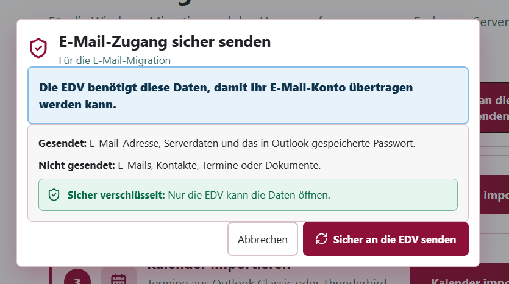

01 / 03
E-Mail-Daten an die EDV senden
Klicken Sie auf der Startseite auf „Sicher an die EDV senden“. Prüfen Sie im angezeigten Dialog, welche Zugangsdaten übermittelt werden, und bestätigen Sie den Versand in der App.
E-Mails, Kontakte, Termine und Dokumente werden bei diesem Schritt nicht mitgesendet.
